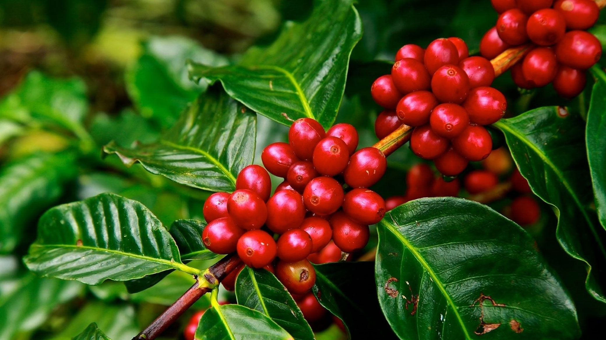

Coffee Anatomy & Varieties
Understanding the chemistry and structure of coffee is the first step toward a perfect brew.
The Two Main Species
- Arabica: Grown at high altitudes. Known for sweetness and complex acidity.
- Robusta: Grown at lower altitudes. Contains double the caffeine and produces a thick crema.
The Coffee Cherry
The coffee bean is actually a seed inside a fruit. Here are the layers:
- Exocarp: The outer skin.
- Mesocarp: The sweet pulp.
- Endocarp: The parchment hull.
- Endosperm: The coffee bean.
